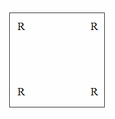
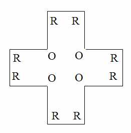

ICPC World Finals 2008 · Problem F
The famous Glenbow Museum in Calgary is Western Canada’s largest museum, with exhibits ranging from art to cultural history to mineralogy. A brand new section is being planned, devoted to brilliant computer programmers just like you. Unfortunately, due to lack of space, the museum is going to have to build a brand new building and relocate into it.
The size and capacity of the new building differ from those of the original building. But the floor plans of both buildings are orthogonal polygons. An orthogonal polygon is a polygon whose internal angles are either 90° or 270°. If 90° angles are denoted as R (Right) and 270° angles are denoted as O (Obtuse) then a string containing only R and O can roughly describe an orthogonal polygon. For example, a rectangle (Figure 1) is the simplest orthogonal polygon and it can be described as RRRR (the angles are listed in counter-clockwise order, starting from any corner). Similarly, a cross-shaped orthogonal polygon (Figure 2) can be described by the sequence RRORRORRORRO, RORRORRORROR, or ORRORRORRORR. These sequences are called angle strings.


Of course, an angle string does not completely specify the shape of a polygon – it says nothing about the length of the sides. And some angle strings cannot possibly describe a valid orthogonal polygon (RRROR, for example). To complicate things further, not all orthogonal polygons are acceptable floor plans for the museum. A museum contains many valuable objects, and these objects must be guarded. Due to cost considerations, no floor can have more than one guard. So a floor plan is acceptable only if there is a place within the floor from which one guard can see the entire floor. Similarly, an angle string is acceptable only if it describes at least one acceptable polygon. Note that the cross-shaped polygon in Figure 2 can be guarded by someone standing in the center, so it is acceptable. Thus the angle string RRORRORRORRO is acceptable, even though it also describes other polygons that cannot be properly guarded by a single guard.
Help the designers of the new building determine how many acceptable angle strings there are of a given length.
The input file contains several test cases. Each test case consists of a line containing a positive integer L (1 ≤ L ≤ 1000), which is the desired length of an angle string. The input will end with a line containing a single zero.
For each test case, print a line containing the test case number (beginning with 1) followed by the number of acceptable angle strings of the given length. Follow the format of the sample output.
4 6 0
Case 1: 1 Case 2: 6